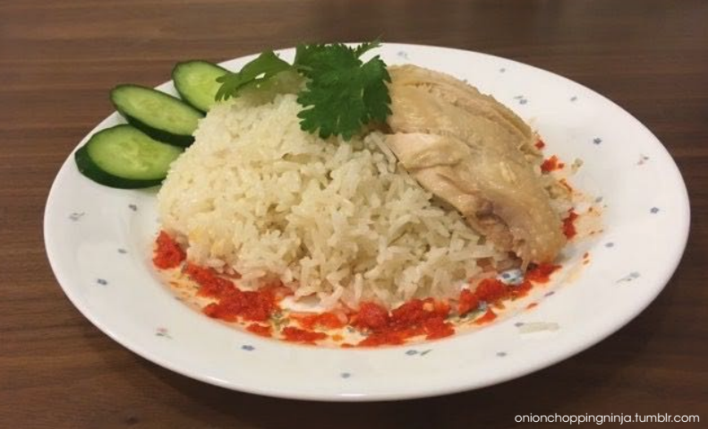

Peppery Daggerquill Rice
| 3+ hours | Total cooking time: 3+ hours | Serves 4 |
The only way to obtain a more authentic version of this classic Singaporean Hainanese chicken rice dish would be to interrogate a poor hawker the same way Ignis questioned Caligo. Warning: this recipe is not for the faint of heart!
To make rice and chicken:
| 1 | ginger root, mashed/cut into smaller pieces with a giant sword | salt and WHITE pepper, to taste | |
| 1 | thumb ginger, sliced | 1 | good |
| 2-3 | chickens' worth of bones to make stock | 1 ½ | cups long-grain jasmine rice (300mL) |
| 8 | shallots | ½ | stem lemongrass |
| 5 | tbsp cooking oil (75mL) | 6-8 | small pandan leaves |
| 12 ½ | cups boiling water (3L) | icy water (enough to submerge chicken in) | |
| (have more ready to add in if it keeps boiling down) | sesame oil |
- Let's set the stock to boil! Blanch the chicken bones with some hot water, then set it to boil with the mashed ginger.
- Meanwhile, slice the shallots. Put them on a paper towel so that the juices soak out of the shallots.
- Heat the cooking oil in a pan, and throw in the shallows. Make sure all the shallows are covered by the oil, and turn the heat down to low.
- The moment the shallots turn brown, turn off the heat and let it sit for a minute. This ensures that the shallows will not burn.
- Separate the shallots from the shallot oil. Do not throw away either. We will only use the shallot oil, but the fried shallots are good as an additional garnish. Some chicken rice stalls will boil up some baby bok choy/xiao bai cai, and top it with oyster sauce to server with this as a side dish.
- Put the uncooked rice in your pot, and instead of water, use the chicken stock that you have made to fill the pot to a height of around the first joint of your index finger, around 1.5 cups (450mL).
- Next, twist the lemongrass till it breaks, tie the pandan into a knot, and put both in a pot, along with the sliced ginger and 5 tbsp (75mL) of the shallot oil. You will have to remove the lemongrass and pandan after the rice cooks.
- Alright, it's time for the chicken (with skin on)! Season the stock with salt and WHITE pepper and then ease the chicken in. Cook on slow heat for 30 mins.
- After the chicken is cooked, dunk it into the ice water for 10 mins. This is a way to ensure the outside skin is still soft, while the latet heat in the chicken cooks the rest of it.
- Take the chicken out and massage it with sesame oil!